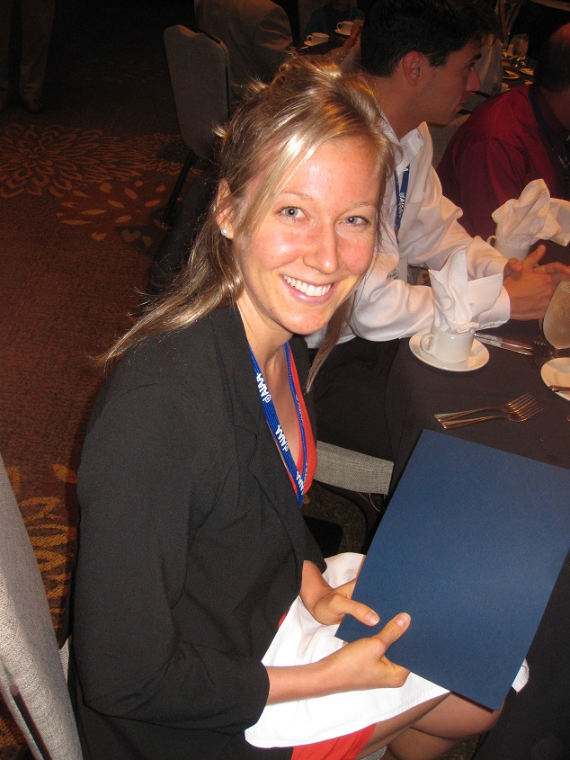
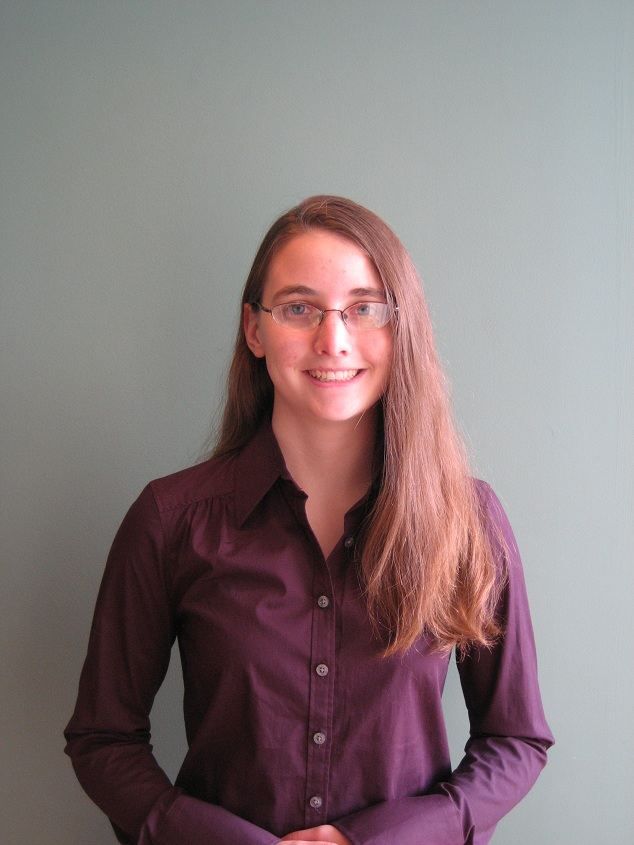
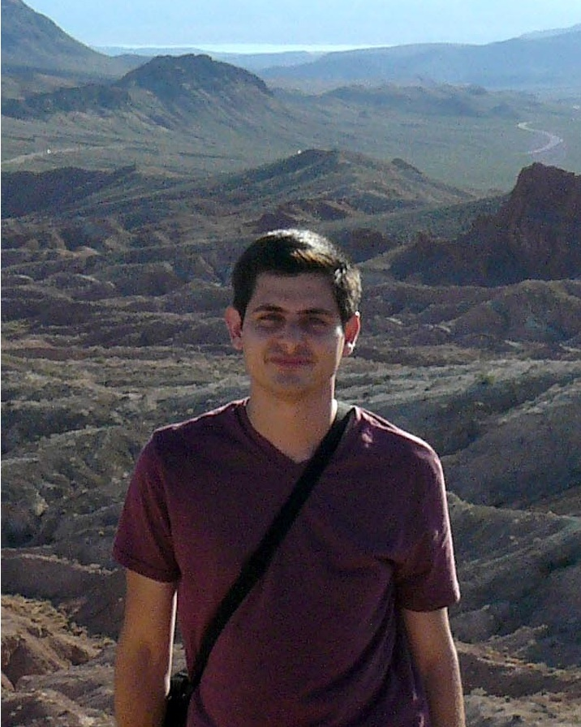
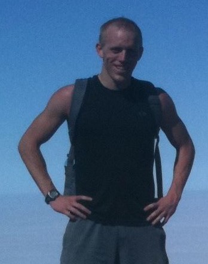
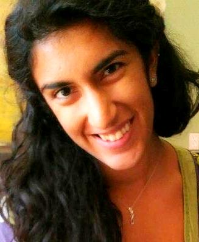
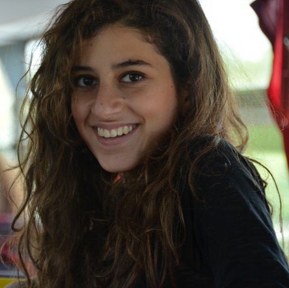

Organizing Committee
Alessandra Babuscia received her B.S. and M.S degrees from the Politecnico di Milano, Milan, Italy, in 2005 and 2007, respectively, and her Ph.D. degree from the Massachusetts Institute of Technology (MIT), Cambridge, in 2012. She is currently a Telecommunication Engineer at NASA JPL (332H). She has developed communication systems for different university missions (CASTOR, ExoplanetSat, TerSat, REXIS, TALARIS). She has been with the Communication Architecture Research Group, NASA Jet Propulsion Laboratory, Pasadena, CA. Her current research interests include communication architecture design, statistical risk estimation, multidisciplinary design optimization, and mission scheduling and planning. She was a member of the organizing committee for iCubeSat 2012 (MIT, Cambridge), and she is a session chair at the IEEE Aerospace Conference

Sara Spangelo completed a B.Sc. in mechanical engineering at the University of Manitoba and a Master's degree in aerospace engineering at the University of Michigan, focusing on optimizing trajectories for energy-efficient periodic solar-powered UAVs. She was involved in the Radio Aurora Explorer (RAX) CubeSat Mission from 2009-2012, where she worked on GPS design analysis and verification and operational scheduling. She completed a Ph.D. in aerospace engineering at the University of Michigan in December 2012. The focus of her doctoral work was on developing a modeling and simulation framework for space systems, and optimization algorithms for scheduling small satellites and heterogeneous ground networks toward enhanced communication capacity. She has been a member of the INCOSE Space Systems Working Group (SSWG) since 2011 and was an intern at NASA's Jet Propulsion Lab (JPL) in 2012, where she worked on developing a RAX CubeSat SysML model and integrating diverse simulation environments to enable simulation of diverse mission architectures. She consulted for AGI in the Spring of 2013, focusing on advancing behavior-based MBSE capabilities for operational space missions. She is currently working at NASA's Jet Propulstion Lab (JPL) in the Mission Systems Concepts Section (312B).

Lorraine Weis is a graduate student pursuing a PhD in Aerospace Engineering with the Space Systems Design Studio at Cornell University. She holds a B.S. in Engineering Phyics from the Franklin W. Olin College of Engineering in Needham, MA. Her current research is in developing Chip-scale spacecraft for applications near Earth and beyond.

Rodrigo Zeledon received his B.S. in Aerospace Engineering from the Massachusetts Institute of Technology in 2009. He is currently a fourth-year Ph.D. student at Cornell University's Space Systems Design Studio. His research interests include spacecraft dynamics, small spacecraft design and small-scale propulsion systems. His current work involves the development of an electrolysis propulsion system for CubeSats.

Derek Dalle is a Postdoctoral Research Fellow in the Department of Aerospace Engineering at the University of Michigan. He received a Ph.D. from Michigan in 2013 and Bachelors degrees in aerospace engineering and mathematics from the University of Minnesota in 2008. His research interests include various types of transatmospheric vehicles including air-breathing hypersonic engines, launch vehicles, and reentry applications. Other aspects of his research include methods to incorporate higher-fidelity simulation into design optimization.

Farah Alibay received her Bachelor's and Master's degrees from the University of Cambridge in Aerospace and Aerothermal Engineering in 2010, and her PhD in Space Systems Engineering from the Massachusetts Institute of Technology (MIT) in 2014. Her PhD research focused on the use of spatially and temporally distributed systems for the exploration of planetary bodies in the solar system, as well as developing tools for the rapid evaluation of mission concepts in early formulation. She is currently working as a systems engineer at NASA's Jet Propulsion Laboratory (JPL) in the Planetary Mission Formulation group.Megan Fazio received her B.S. from Harvard University in Electrical Engineering and Computer Science in 2013. She is currently working as an Electronic Parts Engineer at NASA's Jet Propulsion Laboratory (JPL) in the Office of Safety and Mission Assurance. Her current work involves the analysis of EEE parts used on CubeSat missions.
Kristen MacNeal received her B.S. from UC Irvine in Biomedical Engineering in 2013. She is currently working as an Electronic Parts Engineer at NASA's Jet Propulsion Laboratory (JPL) in the Office of Safety and Mission Assurance. Her current work involves the analysis of EEE parts used on CubeSat missions.
James Skinner received his B.S. from California State University, Chico in Computer Engineering in 2005. He is currently specializing in RF and discrete semiconductor technologies in JPL's Electronic Parts Engineering Office. Extending this and other specialties to CubeSats has become a top priority for the Office of Safety and Mission Assurance.

Lynn Nehme is receiving her B.S.E in Mechanical and Aerospace Engineering from Princeton University. She interned at NASA's Jet Propulsion Laboratory in Team Xc, a concurrent engineering team for rapid design and analysis of small satellite mission concepts, and developed a communication and ground systems tool. She is currently building a small satellite system for autonomous 3D rendering of Resident Space Objects as part of her senior thesis.Carlyn Lee is a software engineer for the Telecommunication Architecture Group at NASA Jet Propulsion Laboratory. She is involved in link budget analysis tools development and optimization for space communication and navigation. Her research interests include communication systems, networking architecture, and high-performance computations. She received her B.S. and M.S. degrees in computer science from the California State University, Fullerton in 2011 and 2012.